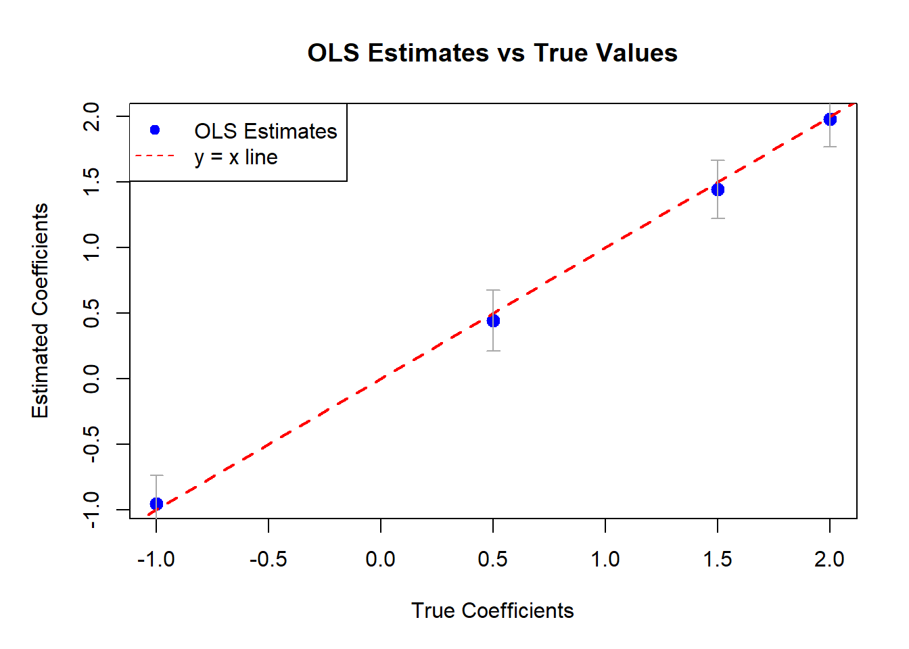

Code
# ============================================================
# Classical Linear Regression: Simulation + OLS Estimation
# ============================================================
set.seed(123)
# --- 1. Simulate data ---------------------------------------
n <- 100 # number of observations
p <- 3 # number of predictors (excluding intercept)
X <- cbind(1, matrix(rnorm(n * p), n, p)) # include intercept
beta_true <- c(2, 0.5, -1, 1.5) # true coefficients
sigma_true <- 1 # true residual SD
y <- X %*% beta_true + rnorm(n, 0, sigma_true)
# --- 2. Estimate parameters via OLS --------------------------
beta_hat <- solve(t(X) %*% X) %*% t(X) %*% y
residuals <- y - X %*% beta_hat
sigma2_hat <- as.numeric(t(residuals) %*% residuals / (n - (p + 1)))
# --- 3. Inference: SEs, t-stats, p-values, CI ---------------
var_beta_hat <- sigma2_hat * solve(t(X) %*% X)
se_beta <- sqrt(diag(var_beta_hat))
t_stats <- beta_hat / se_beta
p_values <- 2 * (1 - pt(abs(t_stats), df = n - (p + 1)))
alpha <- 0.05
t_crit <- qt(1 - alpha/2, df = n - (p + 1))
ci_lower <- beta_hat - t_crit * se_beta
ci_upper <- beta_hat + t_crit * se_beta
# Combine results into a table
results <- data.frame(
Estimate = as.numeric(beta_hat),
SE = se_beta,
t_value = as.numeric(t_stats),
p_value = as.numeric(p_values),
CI_lower = as.numeric(ci_lower),
CI_upper = as.numeric(ci_upper)
)
rownames(results) <- paste0("beta", 0:p)
print(round(results, 4)) Estimate SE t_value p_value CI_lower CI_upper
beta0 1.9807 0.1073 18.4517 0e+00 1.7676 2.1937
beta1 0.4445 0.1169 3.8036 3e-04 0.2126 0.6765
beta2 -0.9538 0.1095 -8.7138 0e+00 -1.1711 -0.7365
beta3 1.4426 0.1122 12.8540 0e+00 1.2198 1.6654Code
# --- 4. Prediction for a new observation ---------------------
x_new <- c(1, 0.5, -1, 1) # include intercept term
y_pred <- as.numeric(x_new %*% beta_hat)
var_pred <- sigma2_hat * (1 + t(x_new) %*% solve(t(X) %*% X) %*% x_new)
se_pred <- sqrt(var_pred)
# 95% prediction interval
pred_interval <- c(
lower = y_pred - t_crit * se_pred,
upper = y_pred + t_crit * se_pred
)
cat("\nPredicted y_new =", round(y_pred, 3), "\n")
Predicted y_new = 4.599 Code
cat("95% Prediction interval: [", round(pred_interval[1], 3), ",",
round(pred_interval[2], 3), "]\n")95% Prediction interval: [ 2.48 , 6.718 ]Code
# --- 5. Visualization: True vs. Estimated Coefficients -------
par(mar = c(5, 5, 4, 2))
plot(beta_true, beta_hat, pch = 19, col = "blue", cex = 1.3,
xlab = "True Coefficients", ylab = "Estimated Coefficients",
main = "OLS Estimates vs True Values")
abline(0, 1, col = "red", lwd = 2, lty = 2)
arrows(beta_true, ci_lower, beta_true, ci_upper, angle = 90, code = 3, length = 0.05, col = "darkgray")
legend("topleft", legend = c("OLS Estimates", "y = x line"),
col = c("blue", "red"), pch = c(19, NA), lty = c(NA, 2))